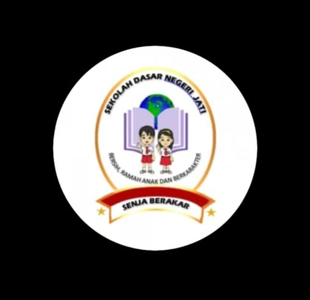

Saya memulai pendidikan di TK Dharma Wanita yang berada di Grogol Kecamatan Tulangan. Di sekolah ini saya belajar banyak hal dasar seperti membaca, menulis, menggambar, dll. Selama bersekolah di TK, saya merupakan anak yang aktif. Selain itu, saya pernah mengikuti lomba mewarnai di gor Sidoarjo dan lomba mewarnai di stasiun kereta api tulangan.
Setelah lulus dari TK, saya melanjutkan ke SDN Grogol yang tempatnya tidak jauh dari tk saya dulu. Di sekolah ini saya pernah mengikuti lomba 3M saat kelas 1 SD, dan berhasil meraih juara 3. Namun ketika saya kelas 4 semester 2, saya pindah sekolah ke SDN Jati yang terletak di JL.Jati utara.
Setelah lulus dari sd, saya melanjutkan pendidikan di SMP PGRI 9 Sidoarjo yang terletak tidak terlalu jauh dari rumah saya saat ini, yaitu di jati selatan. Di SMP ini saya mendapatkan banyak teman baik. Selain itu, saya mengikuti 2 ekstrakulikuler yaitu paskibra dan voli. Saya beberapa kali mendapatkan peringkat 2 dikelas.
Soft-skill
Hard-skill
Berikut beberapa hobi saya :
Saya memiliki banyak kegiatan seprti :
| Jam ke | Senin | Selasa | Rabu | Kamis | Jum'at |
|---|---|---|---|---|---|
| 1 | Dasar-Dasar Program Keahlian PPLG | Bahasa Indonesia | Pendidikan Pancasila dan Kewarganegaraan | Dasar-Dasar Program Keahlian PPLG | Bahasa Indonesia |
| 2 | |||||
| 3 | 1PAS | Pendidikan Jasmani dan Orkes | Bahasa Inggris | ||
| 4 | |||||
| 5 | Pend. Agama Islam dan Budi Pekerti | Sjarah | Informatika | IPAS | |
| 6 | Matematika | ||||
| 7 | BK | Koding dan Kecerdasan Artificial | |||
| 8 | IPAS | Dasar-Dasar Program Keahlian PPLG | Bahasa Inggris | ||
| 9 | Matematika | ||||
| 10 | Bahasa Jawa | Seni Budaya | |||
| 11 | EKSTRA BTQ |
| Jam | Kegiatan |
|---|---|
| 04.00 | Bangun dan sholat subuh |
| 04.15 | Memasak dan menyiapksn bekal |
| 04.50 | Mandi |
| 05.00 | Siap-siap |
| 05.30 | Sarapan |
| 06.00 | Berangkat ke sekolah |
| 14.00 | Pulang sekolah |
| 14.30 | Sholat dhuhur |
| 15.00. | Shalat ashar, lalu tidur |
| 17.00 | Membersihkan rumah |
| 17.30 | Mandi, lalu sholat maghrib |
| 18.00 | Mengerjakan pr |
| 19.00 | Shalat isya', lalu makan |
| 21.00 | Tidur |
No.wa : 0895325711657